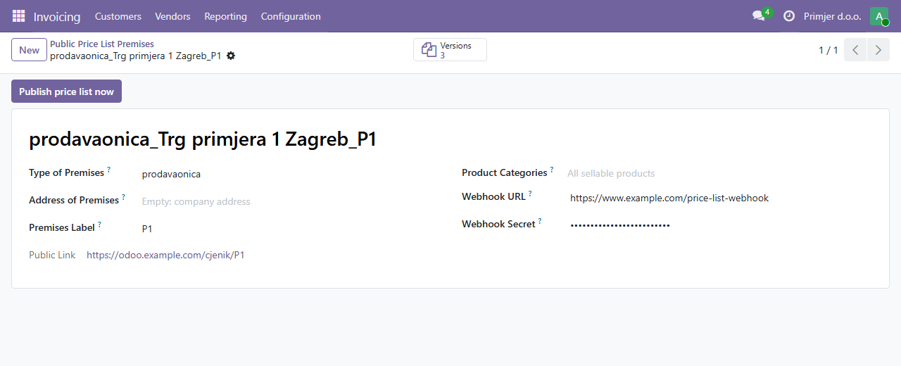
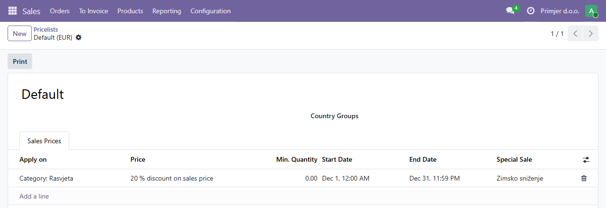
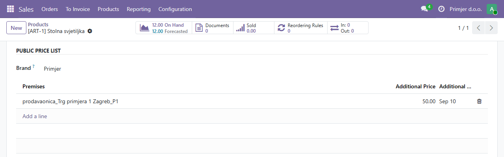
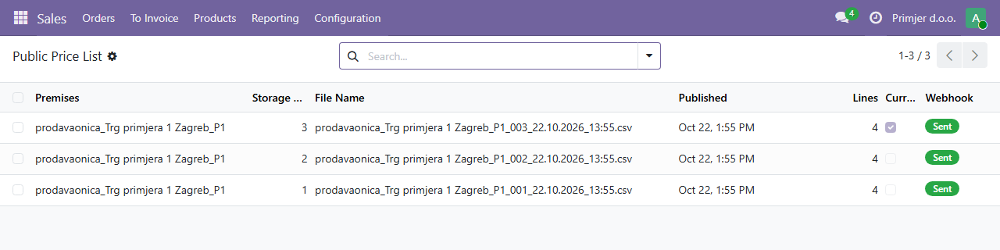

Public Price List for Consumers
Croatia · Government decisions NN 101/26 · Odoo 19 Community and Enterprise
Publishes the machine-readable price list (CSV) that Croatian shops, service providers and web shops
with a website must publish for every premises, with the additional (anchor) price next to every price.
Hrvatski: javni cjenik za potrošače u CSV datoteci za svaki objekt (prodavaonica, ured,
salon, web shop), s dodatnom cijenom i datumom, arhivom od 30 dana, akcijama iz cjenika i webhookom
za vašu mrežnu stranicu (Odluke NN 101/26). Upute na hrvatskom su u README-u modula.
What it does
- One price list per premises – shop, office, salon or web shop – with the prescribed file name
(type, address, label, storage number, date and time) and its own storage numbers.
- Consumer prices as on a quotation: the default pricelist of the company (or the sales price) with
the taxes of the product. Nothing to set up on the premises.
- Additional price (price on 10 September 2026, or at the first publication of a product) saved with
its date and never changed by later prices. Administrators can correct it.
- Special sales are ordinary pricelist rules (discount, validity period) with the name of the sale:
the price list marks them automatically and goes back to the regular price when they end.
- Always up to date: a new version a minute after a change and every morning before 08:00
(a file of the day also without changes; stock, start and end of special sales).
- Public link and archive without login (
/cjenik), older versions kept public for at
least 30 days.
- Optional webhook to your own website (JSON, HMAC-SHA256 signature), with the price before a sale
and the lowest price in the 30 days before it.
Premises
Invoicing (Accounting) → Configuration → Public Price List Premises. Product categories are optional: empty publishes all
sellable products.

Special sales: the Odoo way
Add a rule to the default pricelist (Sales → Products → Pricelists): a discount for a product or a category,
a validity period and the name of the special sale. The same rule applies on quotations, so the published
price is the price on the invoice.

Products
The brand and the additional prices of each premises, on the product form.

Versions
Every version with its storage number, file and webhook state.

The file
CSV, UTF-8 with BOM, semicolons, decimal comma; the same columns for goods and services:
sifra; naziv; marka; jedinica_mjere; maloprodajna_cijena_eur; cijena_za_jedinicu_mjere_eur;
jedinica_mjere_za_cijenu; posebni_oblik_prodaje; naziv_posebnog_oblika_prodaje; dodatna_cijena_eur;
datum_dodatne_cijene; barkod; raspolozivost
Stock per premises
With Inventory, the module Public Price List: Stock per Premises (l10n_hr_price_list_stock)
is installed automatically: with several warehouses, choose the warehouse of each premises for its availability.
Limitations
- One price for all premises (the default pricelist); premises with their own prices are not supported.
- Promotions of Discount & Loyalty (e.g. 2+1) are conditions on an order, not product prices, and are not
shown.
- The lowest price in the 30 days before a sale is sent on the webhook; showing it next to the sale price is up to
you.
By Kalamiri d.o.o. · Support: info@kalamiri.com ·
License AGPL-3. Not an official Odoo localization; not affiliated with Odoo S.A.